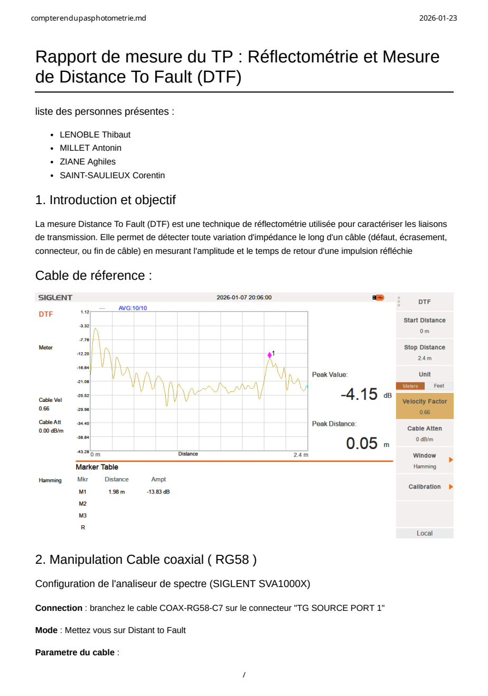
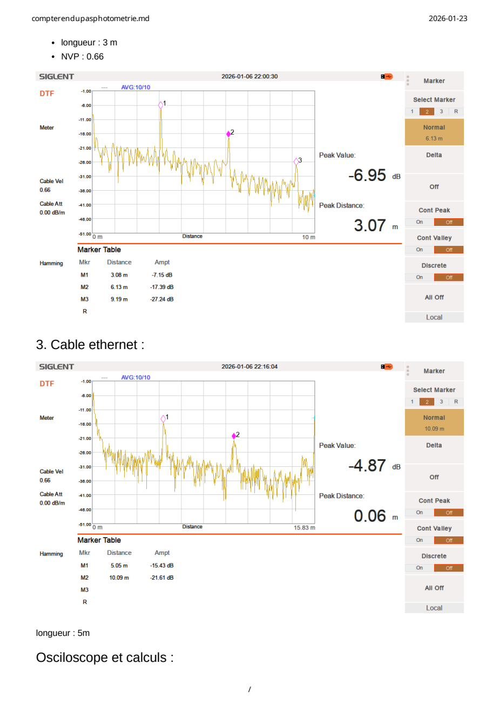
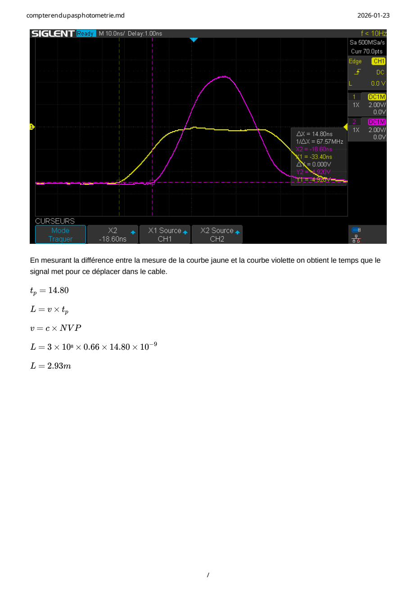
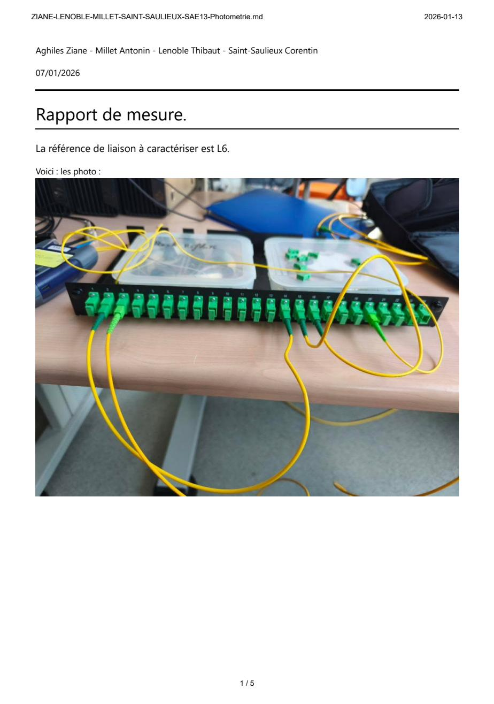
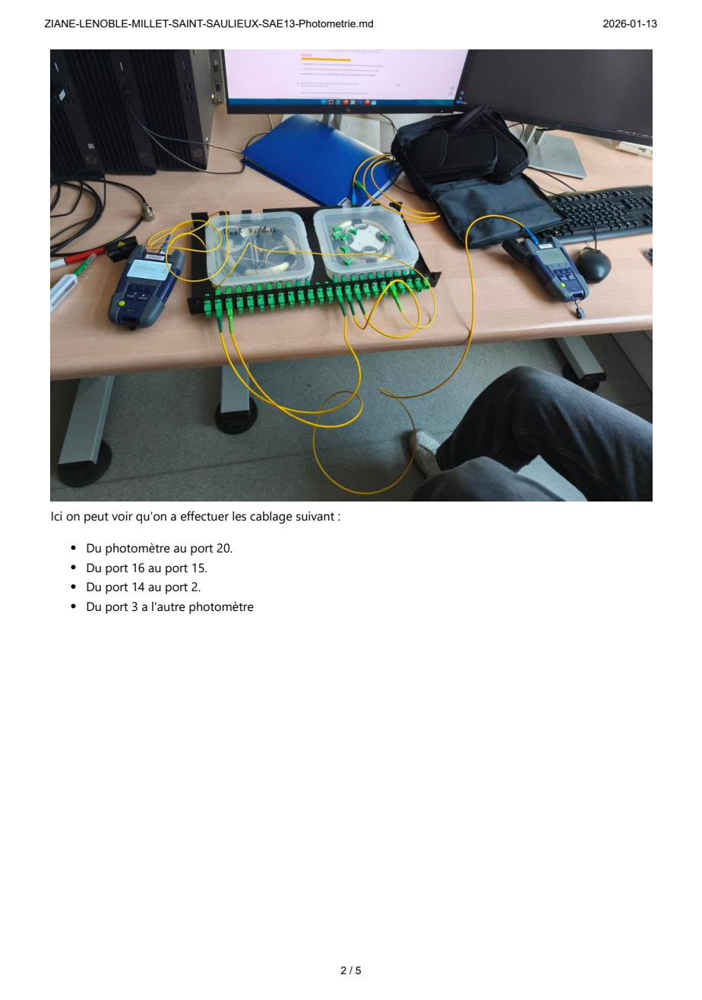
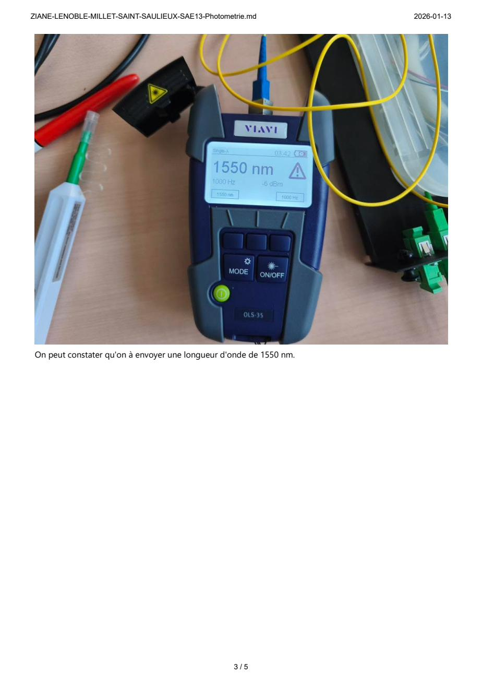
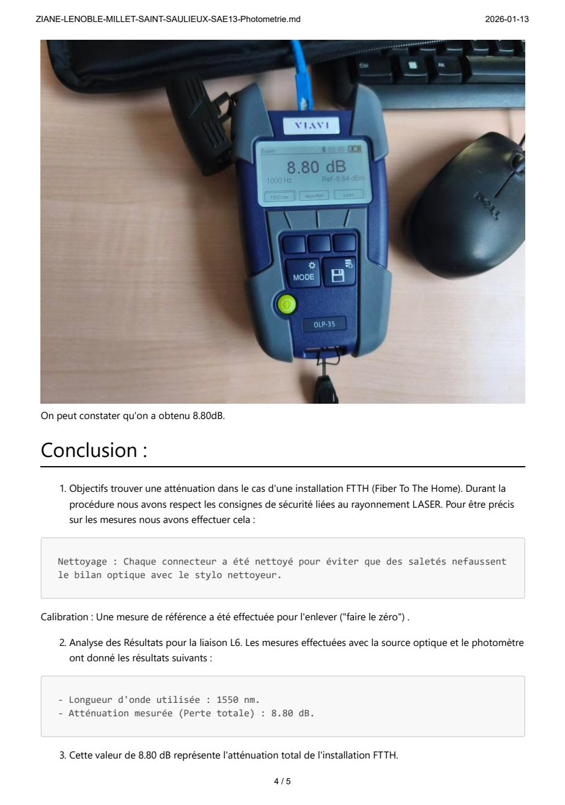
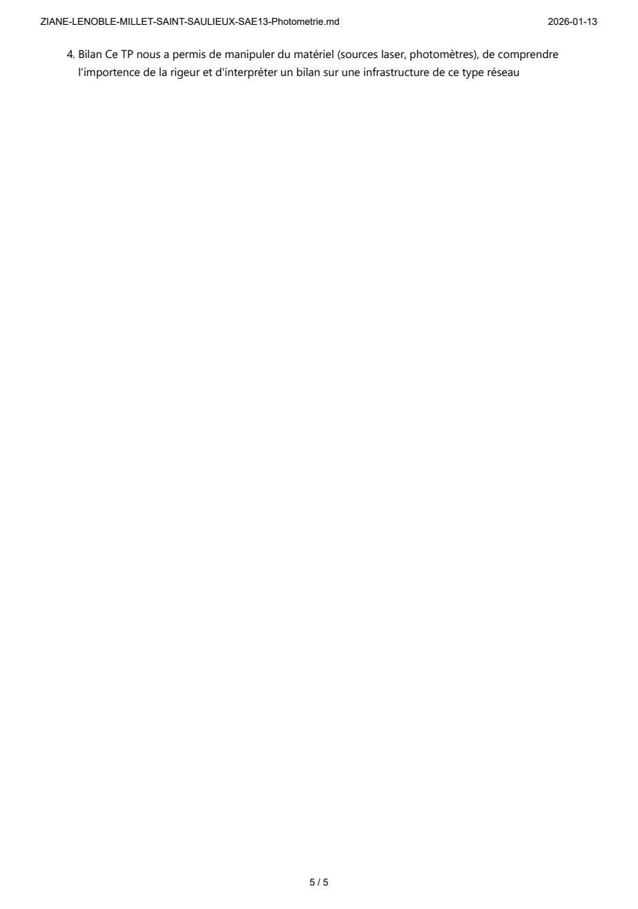

1Description & Objectif
Introduction pratique aux supports physiques de transmission (câbles en cuivre et fibre optique). L'objectif était de comprendre et reproduire des mesures de certification à l'aide d'équipements professionnels (analyseur de spectre, oscilloscope, photomètre) pour en déduire leurs caractéristiques physiques.
2Apprentissages Critiques
- AC1 : Mesurer et analyser les signaux.
- AC2 : Déployer des supports de transmission.
- AC3 : Communiquer avec un tiers et adapter son discours.
3Tâches réalisées & Preuves
Deux rapports de mesure ont été rédigés à l'issue de ce projet : l'un portant sur la réflectométrie DTF sur câble coaxial RG58 et câble Ethernet, l'autre sur un bilan optique par photométrie à 1550 nm sur une liaison FTTH.
Réalisé avec l'analyseur de spectre SIGLENT SVA1000X. L'objectif était de localiser la fin du câble (Peak Distance) et de valider la mesure par calcul avec l'oscilloscope.



Réalisé avec un photomètre VIAVI OLP-35 et une source laser à 1550 nm. Câblage de la liaison L6 sur le panneau de brassage (ports 20→16→15→14→2→3).





4Autoévaluation & Réflexion
J'ai appris à utiliser des appareils de mesure professionnels. Sur le cuivre, j'ai compris la détection de défaut par réflectométrie (DTF) et le calcul de la NVP. Côté fibre, j'ai découvert le déploiement FTTH et les règles d'hygiène optique (nettoyage des connecteurs) avant mesure au photomètre.
| Difficultés rencontrées | Solutions apportées |
|---|---|
| #01 Manipuler les curseurs de l'oscilloscope avec assez de précision pour lire l'écart temporel (ΔX = 14.80 ns) entre signal émis et réfléchi. |
#01
Application rigoureuse de la formule L = c × NVP × tp, permettant de déduire une longueur de 2.93 m à partir des relevés d'écran, très proche des 3 m réels.
|
| #02 Côté fibre, la moindre impureté sur un connecteur faussait intégralement le bilan optique et rajoutait des pertes en dB incontrôlées. | #02 Protocole strict de nettoyage au stylo optique sur chaque connecteur SC/APC et étalonnage du photomètre VIAVI OLP-35 à 1550 nm (mise à zéro de la référence), permettant une mesure précise de 8.80 dB. |